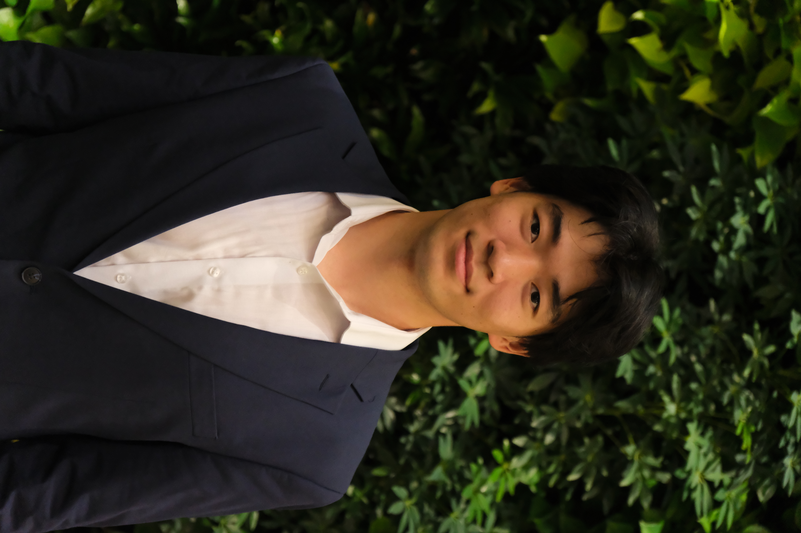
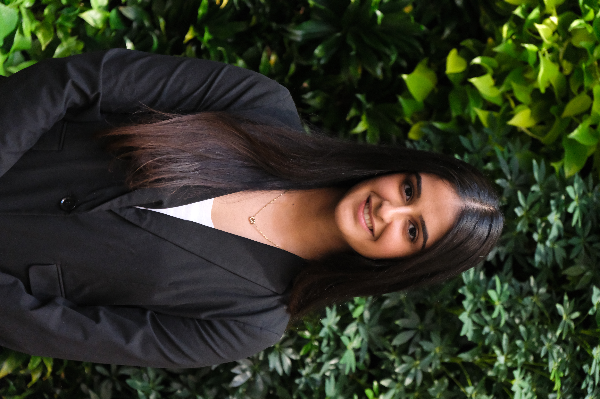
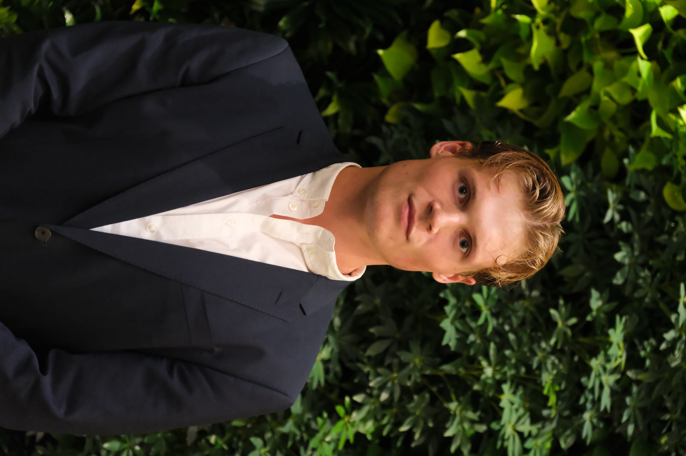
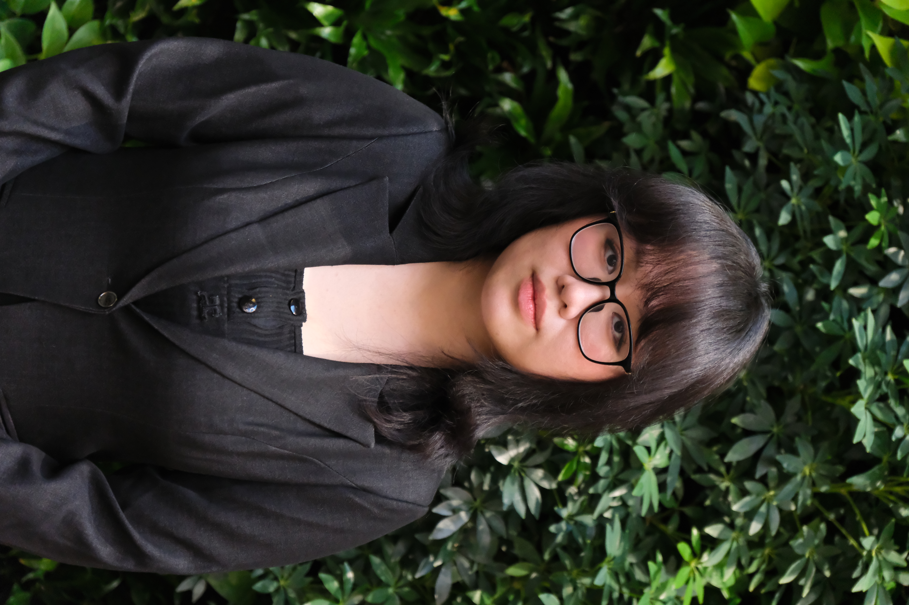
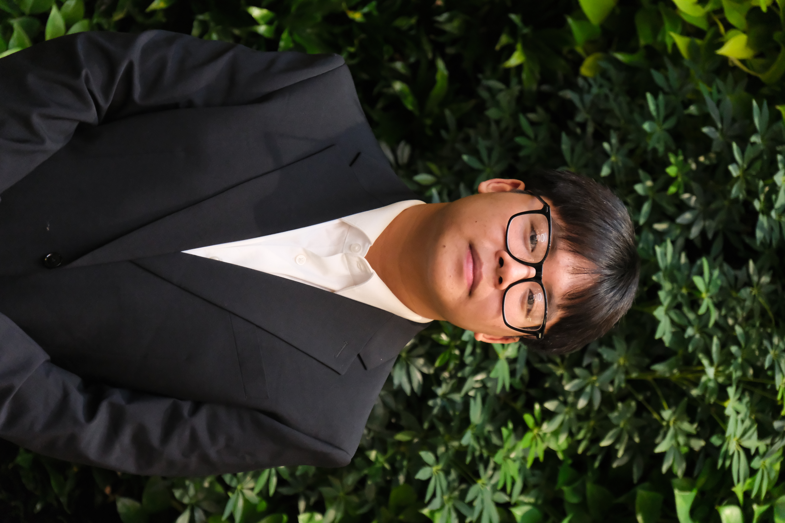
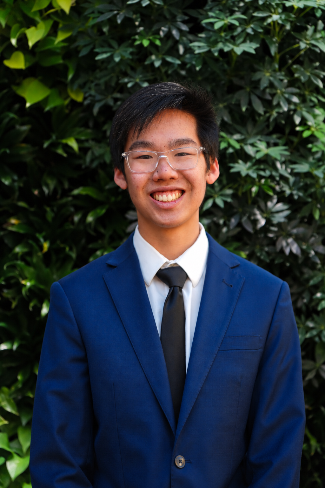
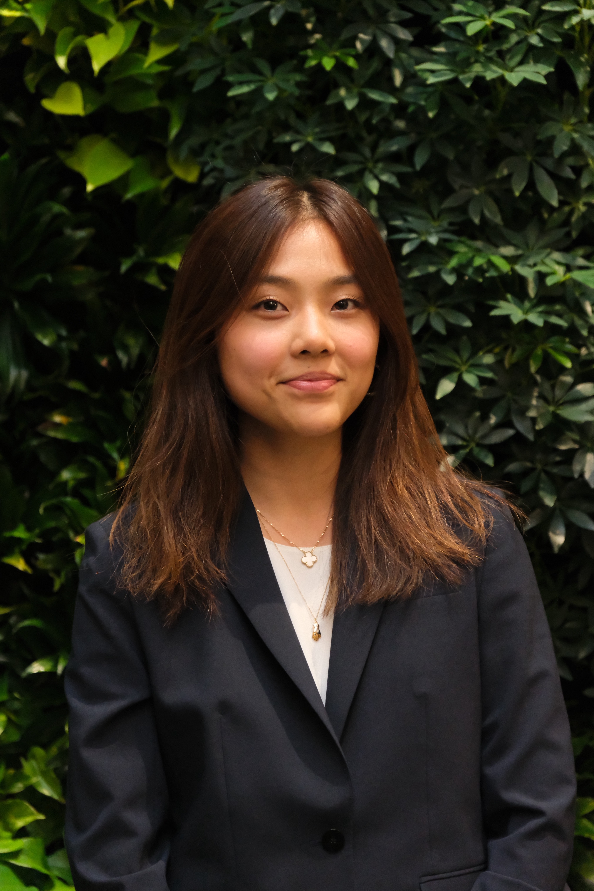
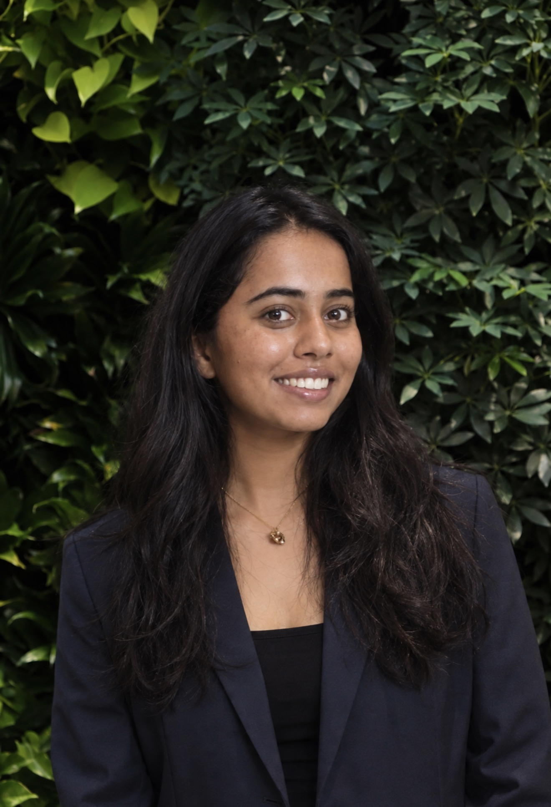
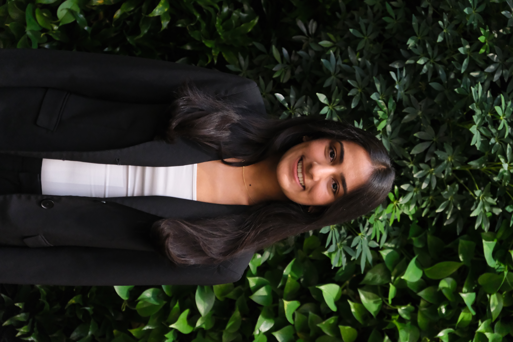

Christian Laquis
Co-President
WUEG is run entirely by Penn undergraduates. The board sets the club's goals each semester, and every VP leads a committee doing real work.
Sets and enacts the club's goals each semester, coordinates projects across the VPs, and carries the club's relationships with sponsors and Wharton administration.
Christian Laquis
Co-President
Jack Abbrecht
Co-President
Each VP runs a committee. Some committees are led by two VPs — copy a card to add one. Read what each committee does.
Isabel Caldera
Co-VP of Events
Samyam Khatiwada
Co-VP of Events

Leo Ding
Co-VP of Careers
Robbie Handelsman
Co-VP of Careers

Alisha Singh
VP of Marketing
Ella Lille Yerington
VP of Marketing
Rohan Jayamaran
Co-VP of Consulting
Jacob Brodkey
Co-VP of Consulting

Wilhelm Goez
Co-VP of Finance

Ha Hoang
Co-VP of Finance

Elvis Truong
Co-VP of Finance

Nick Kwok
Co-VP of Policy

Alison Roh
Co-VP of Policy

Sriya Tallapragada
Co-VP of Research
Namrata Pradeep
Co-VP of Research

Nicole Patel
VP of Membership
When a VP plans to step down, their successor joins as an AVP a semester early and is onboarded into the role. It means leadership changes hands with real overlap instead of a handoff document.
Board member name
AVP of Committee
Board member name
AVP of Committee
Board members are drawn from the committees. Vacancies are announced in the newsletter with the application attached, open for a week to a week and a half, with interviews within five days of close.